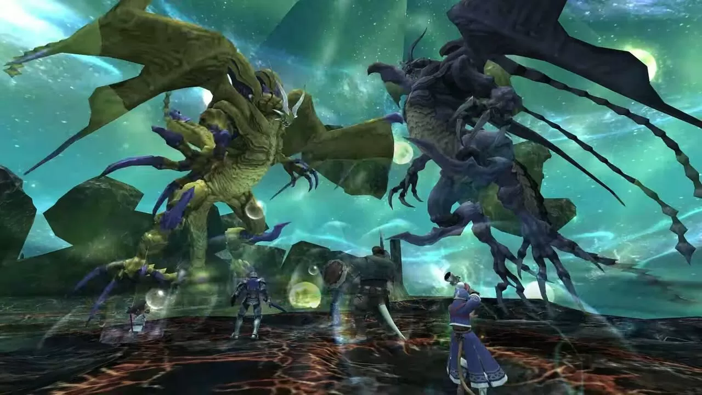

Salió hace 23 años, pero Square Enix sigue actualizando Final Fantasy XI y no con pocas novedades
19 May 2025

Lanzado originalmente en 2002 para PS2 y PC, a más de uno seguro que os sorprenderá saber que el MMORPG Fnal Fantasy XI sigue vivo y activo dos decadas despues, y va a recibir nuevas actualizaciones y contenidos proximamente para su version de ordenador.
El veterano MMO de Square Enix celebró el pasado 16 de mayo su 23º aniversario con un mensaje especial del productor del juego, Yoji Fujito, y un nuevo vídeo que detalla las próximas novedades.
Entre las actualizaciones previstas destaca la posibilidad de personalizar a fondo el aspecto de los personajes , algo habitual en los MMO modernos pero hasta ahora ausente en FFXl . Esta función permitirá cambiar la raza, género, tipo de rostro, color de cabello y complexión de los avatares. Además, se ampliará el contenido de Limbus con nuevos enemigos y se introducira una barra de moral en Besieged que otorgará bonificaciones estadísticas a los jugadores.
el equipo tambien trabaja en mejorar la experiencia para quienes juegan en solitario, a través del sistema de alter egos, similares a los trust de final fantasy xlv , que ahora podrán mejorarse para ofrecer más apoyo en misiones.
En su carta, Yoji Fujito también recuerda que final fantasy xlv ya ha incorporado la primera parte de su contenido colaborativo con FDXl titulado "Echoes of Vana diel" . Este evento incluye zonas emblemáticas como Lower Jeuno y Tu’Lia, música reconocible para los fans y combates contra el Shadow Lord y los Ark Angels, en unas batallas que combinan una fuerte carga nostálgica con elementos novedosos por descubrir.